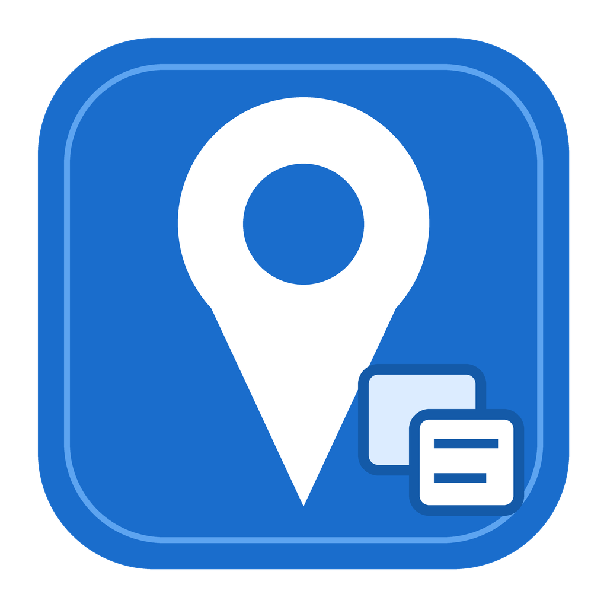

macOS geotagging app
For photographers who want a simple GeoSetter alternative on Mac.
Download for macOS Command-line executableDesktop photo geotagging
Took a few phone shots while shooting with your camera? GeoTagCopy can use those iPhone or Android photos as location references for Sony, Canon, Nikon, Fujifilm, and other camera files. Check the matches, then write GPS tags on your computer.

Latest release
Download free open source builds from GitHub releases. Checking latest version...
For photographers who want a simple GeoSetter alternative on Mac.
Download for macOS Command-line executableFor camera folders that need GPS copied from nearby phone photos.
Download for Windows One-file executableGood use case
This is a small utility for an annoying cleanup job. If a phone photo has the location and a nearby camera photo does not, GeoTagCopy lines them up by time.
Use the camera clock to find the closest phone photo with GPS.
Keep the files on your computer and write metadata with ExifTool.
Workflow
Alternatives
HoudahGeo, GeoSetter, Lightroom, and ExifTool all cover more ground. GeoTagCopy handles the smaller job: phone photos have GPS, camera photos do not, and you want to copy the location after the shoot.
FAQ
Yes, as long as you have phone photos with GPS metadata from the same timeframe. GeoTagCopy uses those files as location references.
No. GeoTagCopy writes GPS coordinates first. Lightroom and Photos can then use that metadata for maps and filtering.
ExifTool still writes the metadata. GeoTagCopy gives you a desktop screen for checking the matches before you change files.
Keep it sustainable
Donations help pay for signing certificates, build runners, hosting, and the slow maintenance work around releases.
Payment is processed by our partner, podocracy.win, and hosted by Stripe.
Open source
GeoTagCopy is released under the MIT License. Open issues and pull requests on GitHub.